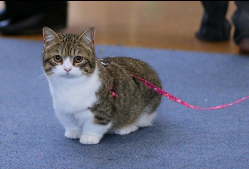
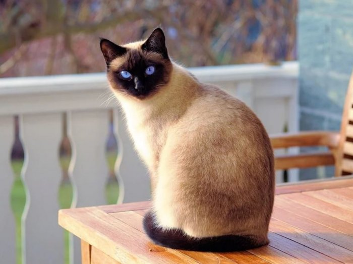

Kucing bengal atau Blacan adalah keturunan ketiga dari hasil
persilangan antara kucing american shorthair dengan kucing asian
leopard. Kucing ini berasal dari California, Amerika Serikat.
Meskipun tergolong kucing hutan, namun ras bengal termasuk hewan
yang banyak digemari dan dijadikan hewan peliharaan. Kucing ini
memiliki ukuran badan yang panjang dengan otot-otot pada tubuhnya
yang kuat. Ia memiliki tulang yang besar dan tebal, serta bulu
yang tebal, rapat dan halus. Dalam proses pemeliharaannya, kucing
ini memerlukan perawatan khusus pada bulunya, yaitu dengan digosok
secara lembut menggunakan sikat yang halus. Populasi kucing
bengal belum begitu banyak sehingga harganya tergolong tinggi, yaitu
bisa mencapai 10-40 juta rupiah.
Kucing Munchkin

Kucing munchkin adalah salah satu ras kucing berkaki pendek yang terbentuk karena mutasi genetik alami. Ras
ini baru mulai dikembangbiakkan sekitar tahun 1980-an di Amerika Serikat, negara asalnya. Karena kakinya
yang pendek, munchkin menjadi salah satu ras kucing terkecil di dunia.
Munchkin ada yang berbulu panjang dan pendek. Karena keunikan ras kucing ini, munchkin sering dipersilangkan
denga ras lain. Munchkin adalah nenek moyang dari beberapa ras kucing berkaki pendek baru, yaitu nenek moyang
ras skookum (persilangan dengan ras laperm), ras minskin dan bambino (persilangan dengan ras sfinks), ras
lambkin (persilangan dengan ras rex selkirk), ras genetta (persilangan dengan ras bengal), dan ras napoleon
(persilangan dengan ras persia, himalaya, dan eksotis).
Kucing Siam

Kucing siam memiliki tubuh ramping, kaki dan ekor yang panjang, dan mata yang berwarna biru. Kucing siam
memiliki bulu yang pendek dan dapat dikenali dari bulunya sebagai penanda di kakinya, ekornya, ataupun
wajahnya yang berwarna ungu, biru, lynx, merah, atau cokelat tua. Pola warna pada bulu kucing siam di
antaranya adalah, titik merah, titik cokelat gelap, titik cokelat tua, titik biru, titik abu-abu, dan titik
ungu. Warna bulu kucing siam akan bertambah gelap seiring dengan pertumbuhan umurnya. Berat badan kucing siam
jantan biasanya sekitar 4-7 kg, sedangkan betina sekitar 5 kg. Kucing siam jantan dapat tumbuh hingga setinggi
60 cm, sedangkan betina hanya dapat setinggi 53 cm.